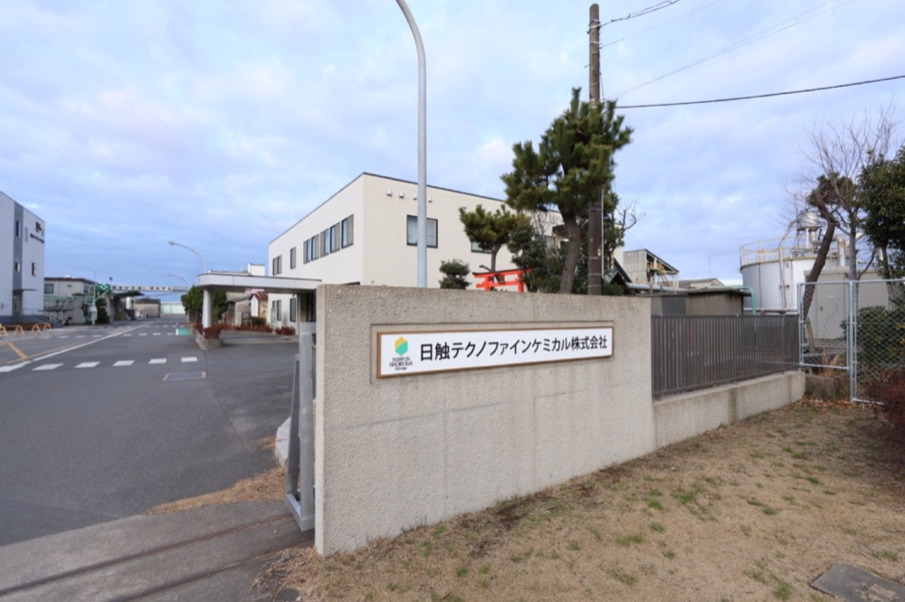
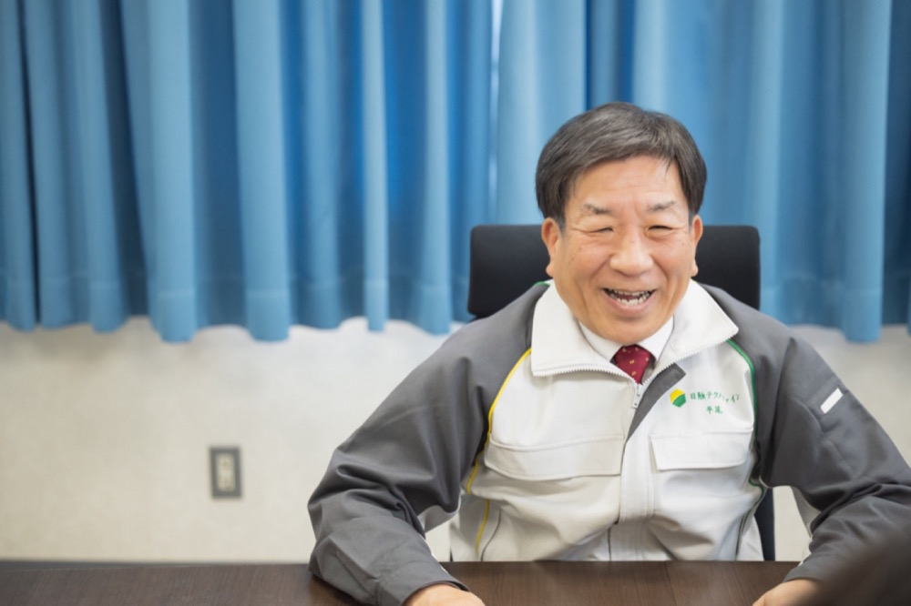
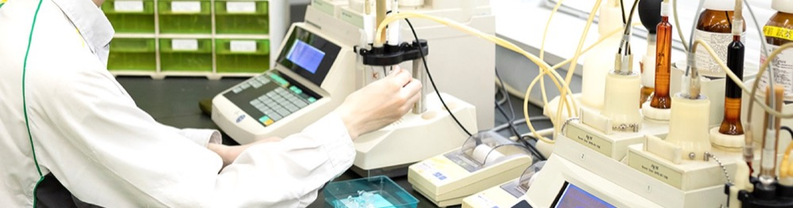
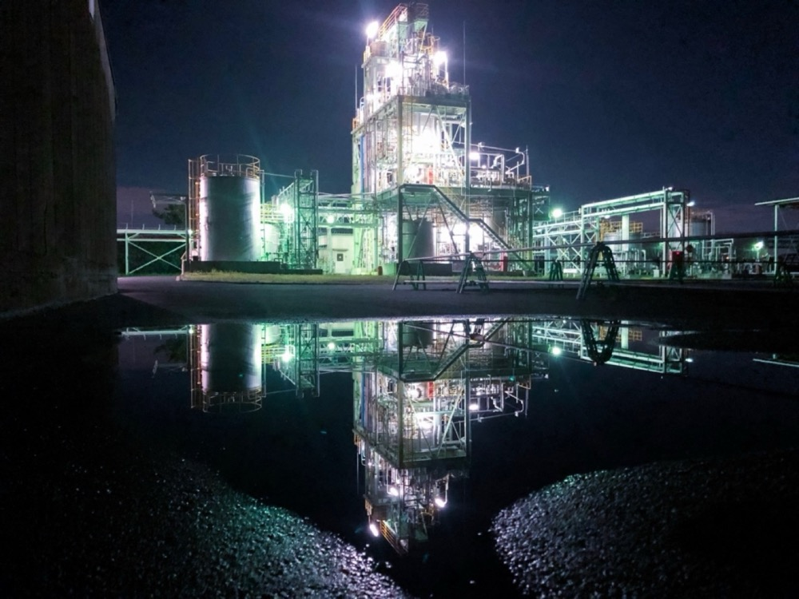

危機を乗り越え、変革し続けた70年
平尾 晴紀Haruki Hirao
日触テクノファインケミカル株式会社 代表取締役社長
2024年6月、代表取締役社長に就任。1992年に株式会社日本触媒に入社以来、ベルギーでのプラント建設プロジェクトを完遂するなど、国内外のモノづくり現場を牽引してきたエンジニア出身のリーダー。困難な状況でも知恵を絞り、挑戦を続ける不屈の精神で、DXも取り入れた既存事業の生産効率化や新素材「ZINLEX™」の事業化を推し進める。社員とその家族が心から誇れる「100年企業」を目指し、対話を重ねながら組織の新たな可能性を切り拓いている。
企業サイトを見るTRACK 01
危機を乗り越え、変革し続けた70年

同社の歴史は、平坦な道のりではなかった。1954年、日本触媒化学工業株式会社（現・株式会社日本触媒）の無水フタル酸事業の原料となるナフタレンを生産するために「日本蒸溜工業株式会社」として設立されたのが始まりだ。当初はタール蒸留技術を基盤としていたが時代の変化とともに主力製品の市場環境は激変した。
「当社の70年は、変化への対応の歴史そのものです。特に2000年前後は最大の試練でした。長年の主力製品が海外との価格競争や環境規制の強化によって苦戦を強いられ、さらには品質管理の問題や海外進出の撤退など、内憂外患の危機に直面しました」
しかし、同社はそこで歩みを止めなかった。タール系事業からの脱却を決断し有機合成分野へと大きく舵を切ることで新たな活路を見出したのだ。苦難の中で培われた「変化を恐れないDNA」は2011年の東日本大震災の際にも発揮された。液状化による甚大な設備被害を受けながらも、社員が一丸となって復旧にあたり驚異的な速さで生産を再開させたという。
TRACK 02
「対話」が変える組織の未来

「就任直後の2ヶ月間、約100名の社員全員と1対1で対話会を行いました。一人あたり30分から1時間。大変でしたがやってよかったと心から思っています」
大企業でのマネジメント経験を持つ平尾だが、日触テクノファインケミカルのような100名規模の組織には特有の良さと課題があるという。
「100名という規模は社長の顔が見え社員一人ひとりの顔も見える。ちょうどいい距離感なんです。ただ、真面目で実直な社員が多い反面、どこか『上からの指示待ち』な雰囲気も感じられました。これだけ変化の激しい時代、トップダウンだけで正解を出し続けることは不可能です。現場を知る社員一人ひとりが自ら考え、発信し、議論し、行動する組織に変わらなければなりません」


TRACK 03
次世代の柱「ZINLEX™」と、千葉から世界へ
現在、同社が総力を挙げて取り組んでいるのが、新規事業開発だ。その筆頭が独自技術により開発された可溶性アクリル酸亜鉛「ZINLEX™（ジンレックス）」である。
「これまで固体でしか扱えなかったアクリル酸亜鉛を独自の技術で溶剤に溶ける形にした画期的な製品です。これにより、塗料やコーティング剤など、これまでは使えなかった用途への展開が可能になりました。昨年特許も取得し展示会などでも大きな反響をいただいています」
既存の強みである「固体・粉体」の技術に新たな発想を掛け合わせることで生まれたこの新素材は、同社が100年企業となるための柱として期待されている。さらに、全社的な生産性向上活動やDXの推進にも余念がない。